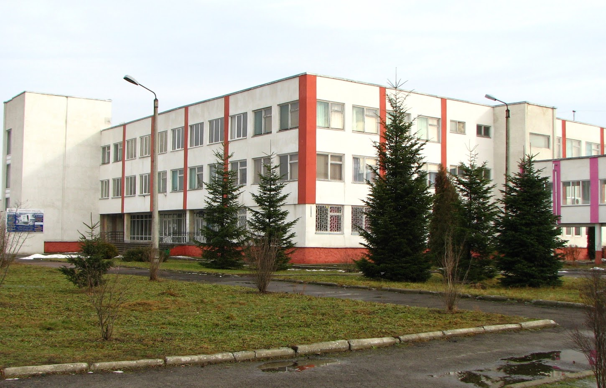

|  | Історія Коледжу електронних приладів
|
Коледж електронних приладів ІФНТУНГу – це сучасний навчальний заклад в якому створено всі умови для підготовки молодшого спеціаліста, який здатен витримати конкуренцію на ринку праці.
В 2000 році Коледж електронних приладів ІФНТУНГу атестовано Державною атестаційною комісією. З метою координації спільної діяльності навчальних закладів на виконання законів України про освіту, про вищу освіту, впровадження системи ступеневої підготовки фахівців для потреб регіону коледж здійснює свою діяльність в навчально-науково виробничому комплексі ІФНТУНГу, співпрацює із НУ “Львівська політехніка”, Прикарпатським університетом ім. В.Стефаника, Чернівецьким національним університетом ім. Ю. Федьковича.
В межах комплексу розробляються складові галузевого стандарту освіти, залучаються провідні спеціалісти базових ВНЗ-ів ІІІ-ІV рівнів акредитації до роботи ДКК, випускники коледжу продовжують навчання в університетах зі споріднених спеціальностей за скороченими програмами підготовки.
Структурні підрозділи коледжу функціонують відповідно до положень, які розроблені згідно з чинним законодавством.
Навчально-виховний процес в коледжі забезпечують117 викладачів, з них 101 штатних , 1 доктор технічних наук, професор,15 кандидатів наук, доцентів , 10 викладачів-методистів.
Склад, кваліфікація, фахова освіта викладачів та адміністративно-управлінського персоналу відповідає вимогам навчальних планів і штатному розпису.
Коледж у своїй роботі керується чинним законодавством України, наказами Міністерства освіти і науки України, статутом ІФНТУНГу, положенням про коледж та правилами внутрішнього розпорядку, наказами ректора університету.
Зміст навчальних планів та програм, навчально-матеріальна база, якісний склад викладачів, які здійснюють фахову підготовку студентів, забезпечує регіональні потреби сучасної промисловості в молодших спеціалістах. Навчально-лабораторна база, яка постійно розвивається, відповідає вимогам навчальних планів та програм, забезпечує сучасний рівень підготовки спеціалістів, має у своєму складі 46 навчальних кабінетів та лабораторій, 103 дисплейних місця.
Коледж має добру славу серед випускників, їхніх батьків та громадськості.
Педагогічний колектив навчального закладу усвідомлює мету і завдання освіти в Україні на зламі століть, шукає ефективні шляхи оновлення навчального-виховного процесу і з надією дивиться у майбутнє.
Коледж електронних приладів Івано-Франківського національного технічного університету нафти і газу готує молодших спеціалістів зі спеціальностей:
Конструювання, виробництво та технічне обслуговування виробів електронної техніки
Галерея коледжу
 |
 |
 |
 |
 |
 |
Трек
Ролик
Монтаж, технічне обслуговування і ремонт обладнання радіозв’язку, радіомовлення та телебачення
Електротеплотехнічні вимірювання
Обслуговування комп’ютеризованих інтегрованих і робототехнічних систем
Обслуговування верстатів з програмним управлінням і робототехнічних комплексів
Обслуговування комп’ютерних систем і мереж
Розробка програмного забезпечення
Економіка підприємства
Бухгалтерський облік
Випускники коледжу отримують дипломи з такими кваліфікаціями:
В коледжі функціонує 4 відділення, за якими закріплено наступні циклові комісії:
| Назва відділення | Спеціальність | Кваліфікація диплому | Перелік груп |
|---|---|---|---|
| Системної інженерії | Обслуговування комп’ютеризованих інтегрованих і робототехнічних систем | Технік із системного адміністрування | A СІ-14-01, СІ-14-02, СІ-13-01, СІ-13-02, СІ-12-01, СІ-12-02, СІ-12-03, СІ-11-01, СІ-11-02, СІ-11-03– |
| Економіко-технічне | |||
| Обслуговування комп'ютерних систем та мереж | Технік-програміст | КІ-14-01, КІ-13-01, КІ-12-01, КІ-11-01 | |
| Економіка підприємства | Молодший спеціаліст з економіки підприємства | ЕП-14-01, ЕП-13-01, ЕП-12-01 | |
| Бухгалтерський облік | Бухгалтер | БО-14-01, БО-13-01, БО-12-01 | |
| Обслуговування верстатів з програмним управлінням і робото технічних комплексів | Електромеханік | ІМ-14-01, ІМ-13-01 | |
| Телекомунікацій та електроніки | |||
| Конструювання, виробництво і технічне обслуговування виробів електронної техніки | Технік-конструктор | ЕЛ-14-01, ЕЛ-13-01, ЕЛ-12-01, ЕЛ-11-01 | |
| Монтаж, технічне обслуговування і ремонт обладнання радіозв’язку, радіомовлення та телебачення | Електромеханік засобів радіо і телебачення | ТК-14-01, ТК-14-02, ТК-13-01, ТК-13-02, ТК-12-01, ТК-12-02, ТК-11-01, ТК-11-02 | |
| Програмної інженерії та метрології | |||
| Розробка програмного забезпечення | Технік-програміст | ПІ-14-01, ПІ-14-02, ПІ-13-01, ПІ-13-02, ПІ-12-01, ПІ-12-02, ПІ-11-01, ПІ-11-02 | |
| Електротеплотехнічні вимірювання | Технік з метрології | МТ-13-01 |